60. Repeated Moral Hazard#
60.1. Overview#
This lecture computes information-constrained optima in the repeated moral-hazard environment of Phelan and Townsend [1991].
The environment is a continuum-agent economy with unobserved effort.
The planner chooses lotteries over individual histories, subject to promise-keeping and incentive-compatibility constraints, and maximizes discounted social surplus.
The key recursive idea comes from Spear and Srivastava [1987]: an agent’s promised continuation utility is a sufficient state variable.
Phelan and Townsend [1991] combine that idea with lotteries, finite grids, and linear programming to compute full-information, static unobserved-action, and repeated unobserved-action allocations.
The lecture proceeds from the recursive formulation to the computational implementation:
We review the promised-utility recursion of Spear and Srivastava [1987].
We formulate the Phelan-Townsend lottery problem and its finite-grid linear-programming approximation.
We use the static economy to isolate the surplus cost of hidden effort and the role of output-contingent consumption.
We use the repeated economy to show how continuation promises become an additional incentive instrument and generate dispersion over time.
60.2. Promised-utility recursion#
Spear and Srivastava [1987] showed how to write an infinitely repeated, discounted principal-agent problem recursively.
A principal owns a technology that produces output \(q_t\) at time \(t\) according to a conditional distribution \(F(q_t \mid a_t)\) that depends on the effort \(a_t\) chosen by an agent.
The principal does not observe \(a_t\).
The principal does observe \(q_t\) at the end of period \(t\) and remembers the full history \(\{q_s\}_{s=0}^t\).
The principal is risk-neutral and has access to a loan market with gross risk-free interest rate \(\beta^{-1}\).
The agent has preferences over random consumption streams ordered by \(E_0 \sum_{t=0}^\infty \beta^t u(c_t, a_t)\), where \(u\) is increasing in \(c\) and decreasing in \(a\).
A contract recommends effort before output is realized and then assigns consumption and continuation promises as functions of observed output histories.
The principal designs the contract to maximize expected discounted surplus \(E_0 \sum_{t=0}^\infty \beta^t \{q_t - c_t\}\).
Let \(w\) denote the discounted expected continuation utility that the principal has promised to the agent at the start of a period.
The promised utility \(w\) summarizes payoff-relevant history.
Given \(w\), the principal chooses a recommended action \(a(w)\), an output-contingent consumption rule \(c(w,q)\), and an output-contingent next-period promise \(\tilde w(w,q)\) subject to
and, for all alternative actions \(\hat a \in A\),
Equation (60.1) is the promise-keeping constraint: the contract must deliver the promised continuation utility \(w\).
Equation (60.2) is the incentive-compatibility constraint: the agent must prefer the recommended action \(a(w)\) over any deviation \(\hat a\).
The principal’s value function \(v(w)\) is the maximum expected discounted surplus attainable when the agent has been promised \(w\).
It satisfies the Bellman equation
subject to the promise-keeping constraint (60.1) and the incentive-compatibility constraint (60.2).
60.3. Lotteries and linear programming#
A technical difficulty in problems like (60.3) is that incentive constraints can make deterministic contract problems non-convex.
Example 60.1 (A non-convex deterministic contract set)
Consider a one-period version of the problem with two outputs, \(q_H\) and \(q_L\), and two actions, high effort \(H\) and low effort \(L\). Suppose that
and that the agent’s utility is
A deterministic contract that recommends high effort pays \(c_H\) after \(q_H\) and \(c_L\) after \(q_L\). Incentive compatibility requires
or
The two contracts \((c_H,c_L)=(1,0)\) and \((c_H,c_L)=(9,4)\) both satisfy this constraint.
But their midpoint, \((c_H,c_L)=(5,2)\), violates it because
Thus the set of deterministic contracts satisfying incentive compatibility is not convex.
The Phelan-Townsend approach formulates the planning problem in terms of lotteries over actions, outputs, consumptions, and continuation utilities.
At the aggregate level these probabilities are also population fractions, so individual randomization creates no aggregate uncertainty in a continuum-agent economy.
For computation, we “grid” the relevant sets of possible utilities, allowing only finitely many points.
With finite sets, or finite approximations to sets, \(A\), \(Q\), and \(C\), the planner’s problem becomes a finite-dimensional optimization problem with linear constraints.
Each stage of the computation therefore amounts to solving a finite linear programming (LP) problem.
We begin with the finite objects in the planning problem.
Let \(P(q \mid a)\) be a family of discrete conditional probability distributions over finite sets \(Q\) (outputs) and \(A\) (actions).
Let \(C\) and \(W'\) be finite grids for current consumption and next-period promised utility.
For each current promise \(w\), the planner chooses a joint probability \(\Pi^w(a, q, c, w')\) subject to:
Equation (60.4) says that conditional on action \(\bar a\), the marginal distribution of output follows \(P(q \mid \bar a)\).
Equations (60.5) require the choice variables to be proper probabilities.
The promise-keeping constraint is
The incentive-compatibility constraint, for each pair \((a, \hat a)\), is
The ratio \(P(q\mid\hat a)/P(q\mid a)\) is the likelihood ratio that updates the probability of outcome \(q\) when the agent deviates from the recommended action \(a\) to \(\hat a\).
The corresponding Bellman operator is also a linear program. The principal’s value function satisfies
where the maximization is over probabilities \(\Pi\) satisfying (60.4), (60.5), (60.6), and (60.7).
This is a linear program: the objective and all constraints are linear in the decision variables \(\Pi^w\).
Because \(v(w')\) on the right side of (60.8) is treated as a fixed vector from the previous iteration, the Bellman operator itself is a linear program.
The algorithm solves one LP for each grid point \(w \in W\) and iterates on the surplus function.
In addition to what’s in Anaconda, this lecture will need the following libraries:
!pip install quantecon cvxpy highspy
We import some Python packages.
from time import time
import cvxpy as cp
import highspy as hp
import matplotlib.pyplot as plt
import numpy as np
import quantecon as qe
60.4. The static economy#
A one-period economy is the cleanest place to isolate the informational friction.
This isolates the static informational friction before the dynamic promised-utility channel is introduced.
We first compute the full-information benchmark, where effort can be controlled directly.
We then make effort private information and add incentive compatibility.
60.4.1. Setting#
The full-information problem (FIP) maximizes expected surplus subject only to feasibility and promise keeping:
subject to
The unobserved-action problem adds incentive compatibility.
For each recommended action \(a\) and each possible deviation \(\hat a\), the utility from obeying must be at least as large as the utility from deviating while preserving the same output-contingent consumption rule:
60.4.2. Parameterization#
The baseline utility specification is
with discrete grids
Variable |
Values |
|---|---|
\(a \in A\) |
\(\{0,\; 0.2,\; 0.4,\; 0.6\}\) |
\(q \in Q\) |
\(\{1,\; 2\}\) |
\(c \in C\) |
\(81\) equally spaced points on \([0,\, 2.25]\) |
and conditional output probabilities
\(a\) |
\(P(q=1)\) |
\(P(q=2)\) |
|---|---|---|
0 |
0.9 |
0.1 |
0.2 |
0.6 |
0.4 |
0.4 |
0.4 |
0.6 |
0.6 |
0.25 |
0.75 |
These parameter values define the baseline numerical economy for the static comparisons and the first dynamic calculations.
The static grid of promised utility values below spans the interval \([1,5]\).
def u(a, c):
return c**0.5 / 0.5 + (1 - a)**0.5 / 0.5
A = np.array([0, 0.2, 0.4, 0.6])
Q = np.array([1, 2])
C = np.linspace(0, 2.25, 81)
P = np.array([[0.9, 0.1],
[0.6, 0.4],
[0.4, 0.6],
[0.25, 0.75]])
60.4.3. Solving the static problem#
The function solve_static_problem solves one LP for each promised
utility value \(w\).
The code keeps the notation close to the mathematical problem:
π[a_i][q_i, c_i] is the lottery probability
\(\Pi^w(a_i,q_i,c_i)\), Φ[q_i, c_i] is output net of consumption,
and U[a_i, c_i] is period utility.
For the full-information problem we impose C1–C3.
For the unobserved-action problem we add C4.
def solve_static_problem(W, u, A, Q, C, P, problem_type):
"""Solve the static LP on a grid of promised utilities."""
n_a, n_q, n_c = len(A), len(Q), len(C)
A_i, Q_i = range(n_a), range(n_q)
Φ = np.array([[q - c for c in C] for q in Q])
U = np.array([[u(a, c) for c in C] for a in A])
w = cp.Parameter()
π = [cp.Variable((n_q, n_c), nonneg=True) for _ in A_i]
surplus = cp.sum([
cp.sum(cp.multiply(Φ, π[a_i]))
for a_i in A_i
])
promise = [
cp.sum([
cp.sum(cp.multiply(U[a_i], π[a_i][q_i, :]))
for a_i in A_i
for q_i in Q_i
]) == w
]
output_law = [
cp.sum(π[a_i][q_i, :]) == P[a_i, q_i] * cp.sum(π[a_i])
for a_i in A_i
for q_i in Q_i
]
probability = [cp.sum([cp.sum(π[a_i]) for a_i in A_i]) == 1]
constraints = promise + output_law + probability
if problem_type.lower() != "full information":
incentives = []
for a_i in A_i:
for a_hat_i in A_i:
obey = cp.sum([
cp.sum(cp.multiply(U[a_i], π[a_i][q_i, :]))
for q_i in Q_i
])
deviate = cp.sum([
cp.sum(cp.multiply(U[a_hat_i], π[a_i][q_i, :]))
* P[a_hat_i, q_i] / P[a_i, q_i]
for q_i in Q_i
])
incentives.append(obey >= deviate)
constraints += incentives
problem = cp.Problem(cp.Maximize(surplus), constraints)
s_W = np.full(len(W), np.nan)
π_W = np.full((len(W), n_a, n_q, n_c), np.nan)
for w_i, w_value in enumerate(W):
w.value = w_value
problem.solve(solver=cp.HIGHS)
if problem.status in (cp.OPTIMAL, cp.OPTIMAL_INACCURATE):
s_W[w_i] = surplus.value
for a_i in A_i:
π_W[w_i, a_i] = π[a_i].value
return s_W, π_W
60.4.4. Static allocations#
Now we solve the static problem for a grid of promised utility values.
W_static = np.linspace(1, 5, 100)
s_W_full, π_full = solve_static_problem(W_static, u, A, Q, C, P,
"full information")
s_W_unobs, π_unobs = solve_static_problem(W_static, u, A, Q, C, P,
"unobserved-actions")
/home/runner/miniconda3/envs/quantecon/lib/python3.13/site-packages/numpy/_core/fromnumeric.py:86: RuntimeWarning: invalid value encountered in reduce
return ufunc.reduce(obj, axis, dtype, out, **passkwargs)
The arrays returned by solve_static_problem have a direct economic
interpretation.
s_W_full and s_W_unobs are the optimized surplus frontiers.
π_full and π_unobs store the optimal lotteries over
\((a,q,c)\) at each promised utility.
The next helper turns a lottery over \((a,q,c)\) into conditional mean consumption for each \((w,a,q)\).
If the event \((a,q)\) has zero probability at a given \(w\), the
conditional mean is undefined and is stored as nan.
def expected_consumption_static(π_W, C):
π0 = np.nan_to_num(π_W, nan=0.0)
mass = π0.sum(axis=-1)
numerator = np.einsum('c,waqc->waq', C, π0)
Ec = np.full(mass.shape, np.nan)
np.divide(numerator, mass, out=Ec, where=mass > 1e-10)
return Ec
plt.figure()
plt.plot(W_static, s_W_full, label="Full information", lw=2)
plt.plot(W_static, s_W_unobs, label="Hidden effort", lw=2)
plt.hlines(0, 1.0, 5.0, linestyle="dashed")
plt.xlabel("w")
plt.ylabel("s(w)")
plt.xlim([1.0, 5.0])
plt.ylim([-1.5, 2.0])
plt.legend()
plt.show()
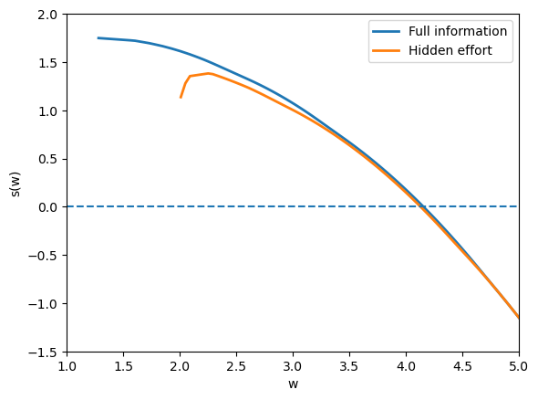
Fig. 60.1 static surplus frontiers#
The full-information frontier is higher because the planner can choose effort directly.
The unobserved-action frontier lies below it because effort must be induced with state-contingent rewards.
The gap is the agency cost of private effort.
We can also look at the expected effort and consumption.
The next figure plots expected effort as a function of the promise \(w\) under full information and under hidden effort.
Ea_full = np.einsum('a,waqc->w', A, π_full)
Ea_unobs = np.einsum('a,waqc->w', A, π_unobs)
plt.figure()
plt.plot(W_static, Ea_full, label="Full information", lw=2)
plt.plot(W_static, Ea_unobs, label="Hidden effort", lw=2)
plt.xlabel("w")
plt.ylabel(r"$E(a(w))$")
plt.xlim([1.0, 5.0])
plt.ylim([0.0, 0.8])
plt.legend()
plt.show()
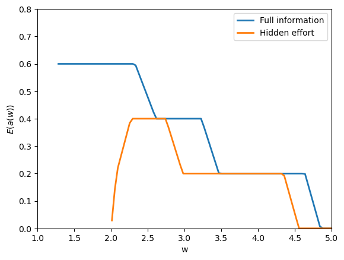
Fig. 60.2 expected effort by promise#
Here the code integrates the action grid against the lottery probabilities, producing \(E(a(w))\).
Under full information, effort is chosen to maximize surplus at each promise.
With unobserved action, expected effort is lower where incentives are costly to provide.
Now we look at expected consumption as a function of the promise \(w\), the recommended action \(a\), and the realized output \(q\).
Ec_unobs = expected_consumption_static(π_unobs, C)
fig, axes = plt.subplots(1, len(Q), sharey=True)
for q_i, ax in enumerate(axes):
for a_i, a in enumerate(A):
ax.plot(W_static, Ec_unobs[:, a_i, q_i], label=f"a={a:g}", lw=2)
ax.set_xlabel(f"w, q={Q[q_i]:g}")
ax.set_xlim([1.0, 5.0])
ax.set_ylim([0.0, 2.25])
axes[0].set_ylabel(r"$E(c \mid w, a, q)$")
axes[-1].legend(title="action", loc="lower right")
fig.tight_layout()
plt.show()
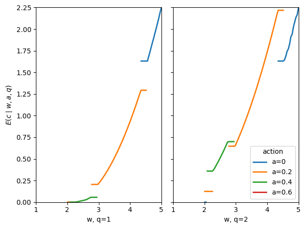
Fig. 60.3 consumption under hidden effort#
The gaps in the figure are important.
A line is missing where the optimal contract puts zero probability on that action-output pair \((a,q)\) at promise \(w\).
In those places, \(E[c \mid w,a,q]\) is not defined because the event being conditioned on never occurs.
As \(w\) rises, the set of actions used by the optimal contract changes.
That is why some lines start and stop.
The absent curve for \(a=0.6\) means that action is never used on this grid.
When effort is hidden, full insurance would make the agent want to choose a lower action.
So, when a positive action is recommended, high output must be rewarded with higher consumption.
That is why, on the parts of the graph where a line exists, consumption is higher after \(q=2\) than after \(q=1\).
Ec_full = expected_consumption_static(π_full, C)
fig, axes = plt.subplots(1, len(Q), sharey=True)
for q_i, ax in enumerate(axes):
for a_i, a in enumerate(A):
ax.plot(W_static, Ec_full[:, a_i, q_i], label=f"a={a:g}", lw=2)
ax.set_xlabel(f"w, q={Q[q_i]:g}")
ax.set_xlim([1.0, 5.0])
ax.set_ylim([0.0, 2.25])
axes[0].set_ylabel(r"$E(c \mid w, a, q)$")
axes[-1].legend(title="action", loc="lower right")
fig.tight_layout()
plt.show()
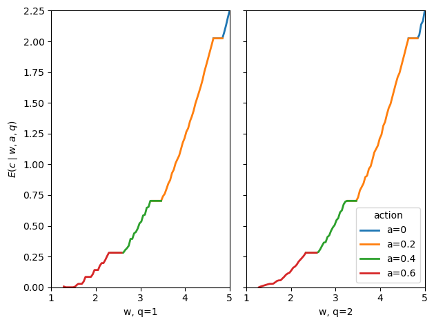
Fig. 60.4 consumption under full information#
With full information, output does not need to carry incentive rewards.
Consumption therefore depends primarily on the promise \(w\) rather than on output.
Notice also that the full-information plot has no gaps of the same kind.
As \(w\) rises, the planner switches from one action to another, but the pieces join up and cover the promise range.
This is because effort is observed: the planner can choose the action directly.
60.5. The repeated economy#
We now move from the one-period economy to infinite-horizon contracts.
The planner maximizes discounted social surplus.
This can be interpreted as allowing society to borrow and lend at the constant gross interest rate \(\beta^{-1}\), so that discounted surplus is the right feasibility criterion.
60.5.1. Formulation#
The recursive repeated problem chooses today’s action, output, consumption, and next-period promised utility.
The surplus function \(s(w)\) satisfies
subject to, for all \((\bar a, \bar q)\),
Constraints C5–C8 are the dynamic analogues of C1–C4.
Constraint C5 keeps the promise \(w\).
Constraint C6 maintains the action-output law of motion.
Constraint C7 is a probability constraint.
Constraint C8 is incentive compatibility.
For the infinite horizon, we iterate on the Bellman operator until the surplus function is stable.
At each iteration, a separate LP is solved for each grid point \(w \in W\).
60.5.2. The two-step algorithm#
Solving the full LP over \((a,q,c,w')\) at each grid point is computationally demanding.
We use a factored algorithm that splits each period into two sub-steps.
The split exploits the additive separability of the utility function
In the first sub-step, the planner chooses action, output, and intermediate promised utility.
Let \(w^m\) be the intermediate promised utility after the output is observed but before consumption is allocated.
Thus \(w^m\) includes the utility from current consumption and the discounted next-period promise, but not the current effort utility.
Solve
In the second sub-step, the planner allocates current consumption and next-period promised utility.
Given \(w^m\), solve
Step 2 is solved first computationally, for all \(w^m \in W^m\), to obtain \(s^m(w^m)\).
Step 1 then uses this intermediate surplus function as input.
This factored algorithm significantly reduces computation time because each sub-LP is smaller than the original joint LP.
The two-step formulation is an approximation when \(W^m\) is discretized: as the number of grid points \(N_m\) grows, it converges to the exact solution.
60.5.3. Functions#
We use HiGHS directly via the highspy bindings instead of building
each LP through CVXPY.
HiGHS is a high-performance open-source solver for linear programming and related optimization problems.
highspy is its Python interface.
It lets us keep the same LP model in memory and change only the small parts that differ across grid points.
In each Bellman iteration the two-step LPs differ only in the promise-keeping right-hand side (and in the objective coefficients between iterations).
Re-building a CVXPY problem object for every grid point and every iteration adds substantial overhead and can leak memory.
With highspy we build each LP once and then mutate the objective
and one row bound between solves.
The first subproblem is Step 2.
For a fixed intermediate promise \(w^m\), Step 2 chooses a lottery over current consumption and tomorrow’s promise, \((c,w')\).
The two constraints are simple: deliver \(w^m\) and make probabilities sum to one.
def _build_step2_lp(C, W_prime, β):
"""Build the Step 2 LP."""
n_C, n_W = len(C), len(W_prime)
n_x = n_C * n_W
U_disc = np.array([2*c**0.5 + β*wp
for c in C for wp in W_prime])
h = hp.Highs()
h.silent()
h.setOptionValue("parallel", "off")
empty_i = np.array([], dtype=np.int32)
empty_d = np.array([], dtype=float)
h.addCols(n_x, np.zeros(n_x), np.zeros(n_x), np.full(n_x, hp.kHighsInf),
0, empty_i, empty_i, empty_d)
idx = np.arange(n_x, dtype=np.int32)
h.addRow(0.0, 0.0, n_x, idx, U_disc) # promise
h.addRow(1.0, 1.0, n_x, idx, np.ones(n_x)) # probability
return h, (n_C, n_W)
Step 1 uses the Step 2 value \(s^m(w^m)\).
It chooses a lottery over the recommended action, output, and intermediate promise, \((a,q,w^m)\).
Here the fixed constraints enforce promise keeping, probabilities, output probabilities, and, in the hidden-effort case, incentive compatibility.
def _build_step1_lp(A, Q, W_m, P, problem_type):
"""Build the Step 1 LP."""
n_A, n_Q, n_W_m = len(A), len(Q), len(W_m)
n_x = n_A * n_Q * n_W_m
def vid(a_i, q_i, m_i):
return (a_i * n_Q + q_i) * n_W_m + m_i
U_aw = np.empty(n_x)
for a_i, a in enumerate(A):
ua = 2*(1 - a)**0.5
for q_i in range(n_Q):
for m_i, wm in enumerate(W_m):
U_aw[vid(a_i, q_i, m_i)] = ua + wm
h = hp.Highs()
h.silent()
h.setOptionValue("parallel", "off")
empty_i = np.array([], dtype=np.int32)
empty_d = np.array([], dtype=float)
h.addCols(n_x, np.zeros(n_x), np.zeros(n_x), np.full(n_x, hp.kHighsInf),
0, empty_i, empty_i, empty_d)
idx = np.arange(n_x, dtype=np.int32)
h.addRow(0.0, 0.0, n_x, idx, U_aw) # promise
h.addRow(1.0, 1.0, n_x, idx, np.ones(n_x)) # probability
# Output law
for a_i in range(n_A):
for q_i in range(n_Q):
row = np.zeros(n_x)
for m_i in range(n_W_m):
row[vid(a_i, q_i, m_i)] += 1.0
for q_j in range(n_Q):
for m_i in range(n_W_m):
row[vid(a_i, q_j, m_i)] -= P[a_i, q_i]
nz = np.flatnonzero(row)
h.addRow(0.0, 0.0, nz.size,
nz.astype(np.int32), row[nz])
# Incentive compatibility
if problem_type.lower() != "full information":
for a_i in range(n_A):
ua = 2*(1 - A[a_i])**0.5
for a_hat in range(n_A):
if a_hat == a_i:
continue
ua_h = 2*(1 - A[a_hat])**0.5
row = np.zeros(n_x)
for q_i in range(n_Q):
ratio = P[a_hat, q_i] / P[a_i, q_i]
for m_i, wm in enumerate(W_m):
coef = (ua + wm) - (ua_h + wm) * ratio
row[vid(a_i, q_i, m_i)] -= coef
nz = np.flatnonzero(row)
h.addRow(-hp.kHighsInf, 0.0, nz.size,
nz.astype(np.int32), row[nz])
return h, (n_A, n_Q, n_W_m)
Once the constraint matrices are built, each Bellman iteration only changes objective coefficients.
The next helpers update those coefficients in place.
HiGHS minimizes by default, so we store the negative of the surplus objective.
def _update_step2_objective(h, C, W_prime, s_W_prime, β):
n_C, n_W = len(C), len(W_prime)
obj = -(β * np.broadcast_to(s_W_prime, (n_C, n_W))
- np.asarray(C)[:, None]).ravel()
cols = np.arange(obj.size, dtype=np.int32)
h.changeColsCost(cols.size, cols, obj)
h.clearSolver()
def _update_step1_objective(h, A, Q, W_m, s_W_m):
n_A, n_Q, n_W_m = len(A), len(Q), len(W_m)
Φ = np.asarray(Q)[:, None] + np.asarray(s_W_m)[None, :]
obj = -np.broadcast_to(Φ, (n_A, n_Q, n_W_m)).ravel()
cols = np.arange(obj.size, dtype=np.int32)
h.changeColsCost(cols.size, cols, obj)
h.clearSolver()
Finally we solve the two subproblems across their promise grids.
The promise-keeping constraint is row 0 in both LPs.
So at each grid point we only change the lower and upper bound of row 0, then resolve the same model.
def _solve_step2(h, shape, W_m):
n_C, n_W = shape
n_W_m = len(W_m)
s_W_m = np.empty(n_W_m)
π_W_m_s2 = np.empty((n_W_m, n_C, n_W))
for i, wm in enumerate(W_m):
h.changeRowBounds(0, wm, wm)
h.run()
st = h.getModelStatus()
if st != hp.HighsModelStatus.kOptimal:
raise RuntimeError(f"Step 2 LP not optimal at w_m={wm}: {st}")
s_W_m[i] = -h.getObjectiveValue()
π_W_m_s2[i] = np.asarray(h.getSolution().col_value).reshape(n_C, n_W)
return s_W_m, π_W_m_s2
def _solve_step1(h, shape, W):
n_A, n_Q, n_W_m = shape
s_W = np.empty(len(W))
π_W_s1 = np.empty((len(W), n_A, n_Q, n_W_m))
for i, w in enumerate(W):
h.changeRowBounds(0, w, w)
h.run()
st = h.getModelStatus()
if st != hp.HighsModelStatus.kOptimal:
raise RuntimeError(f"Step 1 LP not optimal at w={w}: {st}")
s_W[i] = -h.getObjectiveValue()
π_W_s1[i] = (np.asarray(h.getSolution().col_value)
.reshape(n_A, n_Q, n_W_m))
return s_W, π_W_s1
60.5.4. Repeated-economy solver#
The solver below builds the Step 1 and Step 2 LPs once.
After that, each Bellman iteration only changes the objective coefficients, and each promise-grid point only changes one row bound.
It also uses Anderson acceleration with a short history of recent surplus functions.
This often reduces the number of Bellman iterations.
def solve_multi_period_economy(A=None,
Q=None,
C=None,
P=None,
problem_type=None,
β=0.95,
N=50,
N_m=50,
s_W_0=None,
tol=1e-4,
max_iter=300,
m_anderson=5,
verbose=True):
"""Solve the infinite-horizon problem with reusable HiGHS models."""
if β >= 1 or β <= 0:
raise ValueError('β must lie in (0, 1)')
def u_fn(a, c):
return c**0.5 / 0.5 + (1 - a)**0.5 / 0.5
problem_type = problem_type.lower()
if problem_type == "full information":
w_l = u_fn(A.max(), C.min()) / (1 - β)
w_u = u_fn(A.min(), C.max()) / (1 - β)
else:
w_l = u_fn(A.min(), C.min()) / (1 - β)
w_u = u_fn(A.min(), C.max()) / (1 - β)
W = np.linspace(w_l, w_u, N)
W_m = np.linspace(β * w_l + 2 * C.min()**0.5,
β * w_u + 2 * C.max()**0.5, N_m)
step2_lp, shape2 = _build_step2_lp(C, W, β)
step1_lp, shape1 = _build_step1_lp(A, Q, W_m, P, problem_type)
s_W_prime = (np.array(s_W_0, dtype=float)
if s_W_0 is not None else np.zeros(N))
hist_x, hist_fx = [], []
err = np.inf
for iteration in range(1, max_iter + 1):
t0 = time()
_update_step2_objective(step2_lp, C, W, s_W_prime, β)
s_W_m, π_W_m_s2 = _solve_step2(step2_lp, shape2, W_m)
_update_step1_objective(step1_lp, A, Q, W_m, s_W_m)
s_W, π_W_s1 = _solve_step1(step1_lp, shape1, W)
t1 = time()
err = np.max(np.abs(s_W - s_W_prime))
if verbose:
print(f"Iter {iteration:3d}: max|ΔsW| = {err:.2e} ({t1-t0:.1f}s)")
if err <= tol:
if verbose:
print(f"Converged in {iteration} iterations.")
break
# Anderson acceleration.
hist_x.append(s_W_prime.copy())
hist_fx.append(s_W.copy())
mk = min(len(hist_x), m_anderson)
if len(hist_x) > m_anderson:
hist_x.pop(0)
hist_fx.pop(0)
if mk >= 2:
X = np.column_stack(hist_x[-mk:])
FX = np.column_stack(hist_fx[-mk:])
F = FX - X
FtF = F.T @ F
reg = max(1e-10 * np.trace(FtF) / mk, 1e-14)
ones = np.ones(mk)
try:
θ = np.linalg.solve(FtF + reg * np.eye(mk), ones)
θ /= ones @ θ
s_candidate = FX @ θ
s_next = (s_candidate
if np.all(np.isfinite(s_candidate))
else s_W)
except np.linalg.LinAlgError:
s_next = s_W
else:
s_next = s_W
s_W_prime = s_next
else:
print(f"Warning: did not converge after {max_iter} iterations. "
f"Final max|ΔsW| = {err:.2e}")
return s_W, π_W_s1, π_W_m_s2, W
60.5.5. Dynamic allocations#
We use the same parameters as for the static economy, plus a discount factor \(\beta = 0.8\) and grids of \(N = N_m = 100\) points.
We initialize the value function iteration with the one-period (static) solution, scaled to discounted-sum units.
β = 0.8
N = 100
N_m = 100
W_l = u(A.min(), C.min()) / (1 - β)
W_u = u(A.min(), C.max()) / (1 - β)
W = np.linspace(W_l, W_u, N)
W_m_l = β * W_l + 2 * C.min()**0.5
W_m_u = β * W_u + 2 * C.max()**0.5
W_m = np.linspace(W_m_l, W_m_u, N_m)
with qe.Timer():
s_W_0, π_0 = solve_static_problem(W * (1 - β), u,
A, Q, C, P,
"unobserved-actions")
0.5179 seconds elapsed
The next cell solves the infinite-horizon hidden-effort problem using the static solution as the initial value.
with qe.Timer():
s_W, π_W_s1, π_W_m_s2, _ = solve_multi_period_economy(
A, Q, C, P, "unobserved-actions",
β=β, N=N, N_m=N_m,
s_W_0=s_W_0 / (1 - β),
tol=1e-8, verbose=False)
plt.figure()
plt.plot(W, s_W, "k-.", label="Infinite-horizon hidden effort", lw=2)
plt.xlim([5.0, 25.0])
plt.ylim([-7.5, 10.0])
plt.xlabel("w")
plt.ylabel("s(w)")
plt.legend()
plt.show()
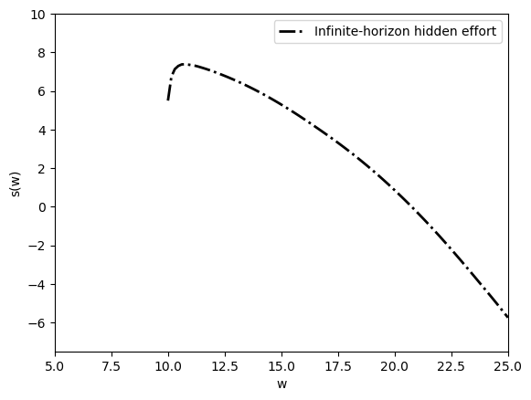
Fig. 60.5 infinite-horizon surplus function#
At each promised utility, the surplus function is the fixed point of the Bellman operator.
The current lottery and the continuation promise are jointly chosen so that tomorrow’s promise is priced by the same surplus function plotted here.
60.5.6. Recovering \(\Pi^w(a, q, c, w')\)#
The two-step algorithm returns \(\Pi^w(a, q, w^m)\) and \(\Pi^{w^m}(c, w')\) separately.
We recover the full joint distribution by using
π = np.einsum("waqm,mcx->waqcx", π_W_s1, π_W_m_s2)
The einsum line is just the law of total probability.
It sums over the intermediate promise \(w^m\) and reconstructs the full lottery over \((a,q,c,w')\).
To measure the gain from history dependence, we compare three surplus frontiers: full information, static hidden effort, and repeated hidden effort.
W_full = np.linspace(5, 25, N)
with qe.Timer():
s_W_1, π_1 = solve_static_problem(W_full*(1-β), u, A,
Q, C, P, "full information")
0.3941 seconds elapsed
plt.figure()
plt.plot(W_full, s_W_1/(1 - β), label="Full information", lw=2)
plt.plot(W, s_W, "k-.", label="Repeated hidden effort", lw=2)
plt.plot(W, s_W_0/(1 - β), label="Static hidden effort", lw=2)
plt.xlim([5.0, 25.0])
plt.ylim([-7.5, 10.0])
plt.hlines(0, 5.0, 25.0, linestyle="dashed")
plt.xlabel("w")
plt.ylabel("s(w)")
plt.legend()
plt.show()
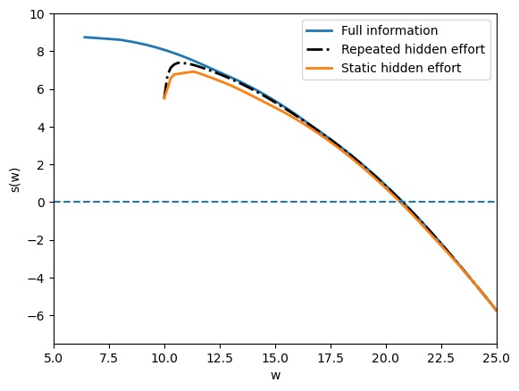
Fig. 60.6 surplus functions compared#
This comparison separates two forces.
The full-information frontier is highest because effort can be controlled directly.
The infinite-horizon hidden-effort frontier is below it because incentive constraints remain, but it lies above the frontier obtained by repeating the one-period hidden-effort contract.
The difference between the two unobserved-action curves is the gain from history dependence.
The next figure compares expected effort in the static hidden-effort contract and in the repeated contract.
Ea_1 = np.einsum('a,waqc->w', A, π_0)
Ea_inf = np.einsum('a,waqcx->w', A, π)
plt.figure()
plt.plot(W, Ea_inf, label="Repeated hidden effort", lw=2)
plt.plot(W, Ea_1, label="Static hidden effort", lw=2)
plt.xlabel("w")
plt.ylabel(r"$E\{a(w)\}$")
plt.xlim([5.0, 25.0])
plt.ylim([0.0, 0.8])
plt.legend()
plt.show()
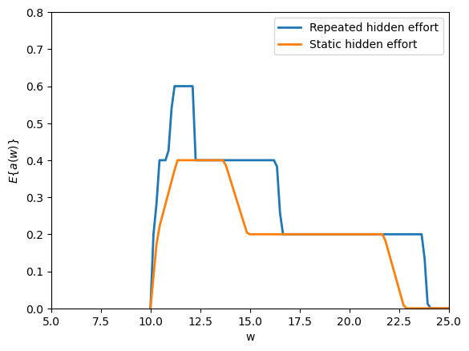
Fig. 60.7 effort and history dependence#
History dependence also raises effort relative to repeated one-period contracts.
Near the lower utility bound, incentive compatibility forces low effort, but away from that bound continuation promises help provide incentives without relying only on current consumption.
The full lottery \(\pi(w,a,q,c,w')\) is high-dimensional.
To read it, we summarize it by conditional means.
The next helper computes \(E[c \mid w,a,q]\), first summing over continuation promises and then normalizing by the probability of the conditioning event.
def expected_consumption(π, C):
"""Compute E[c | w, a, q]."""
if π.ndim == 4:
mass = π.sum(axis=3)
total = np.einsum("c,waqc->waq", C, π)
else:
mass = π.sum(axis=(3, 4))
total = np.einsum("c,waqcx->waq", C, π)
return np.divide(total, mass,
out=np.full_like(total, np.nan, dtype=float),
where=mass > 1e-12)
Ec_inf = expected_consumption(π, C)
fig, axes = plt.subplots(1, len(Q), sharey=True)
for q_i, ax in enumerate(axes):
for a_i, a in enumerate(A):
ax.plot(W, Ec_inf[:, a_i, q_i], label=f"a={a:g}", lw=2)
ax.set_xlabel(f"w, q={Q[q_i]:g}")
ax.set_xlim([5.0, 25.0])
ax.set_ylim([0.0, 2.25])
axes[0].set_ylabel(r"$E(c \mid w, a, q)$")
axes[-1].legend(title="action", loc="lower right")
fig.tight_layout()
plt.show()
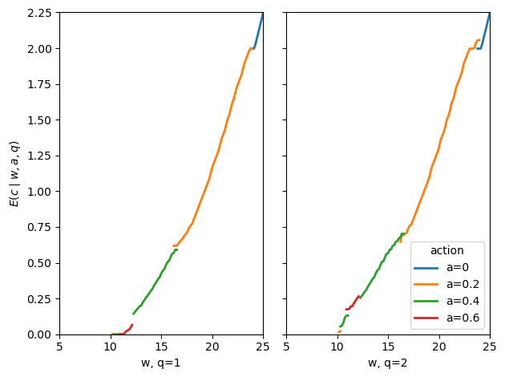
Fig. 60.8 consumption in repeated contract#
The repeated contract smooths current consumption relative to the static hidden-effort economy.
Output still affects rewards, but a large part of the reward and punishment is shifted into future promised utility.
The parallel statistic for the dynamic margin is \(E[w' \mid w,a,q]\).
This is the object that reveals how the contract uses future utility as a reward or punishment.
def expected_promise(π, W):
"""Compute E[w' | w, a, q]."""
mass = π.sum(axis=(3, 4))
total = np.einsum("x,waqcx->waq", W, π)
return np.divide(total, mass,
out=np.full_like(total, np.nan, dtype=float),
where=mass > 1e-12)
Ew_inf = expected_promise(π, W)
fig, axes = plt.subplots(1, len(Q), sharey=True)
for q_i, ax in enumerate(axes):
for a_i, a in enumerate(A):
ax.plot(W, Ew_inf[:, a_i, q_i], label=f"a={a:g}", lw=2)
ax.plot(W, W, "k-.", label="45-degree line", lw=2)
ax.set_xlabel(f"w, q={Q[q_i]:g}")
ax.set_xlim([10.0, 25.0])
ax.set_ylim([10.0, 25.0])
axes[0].set_ylabel(r"$E(w' \mid w, a, q)$")
axes[-1].legend(title="action", loc="lower right")
fig.tight_layout()
plt.show()
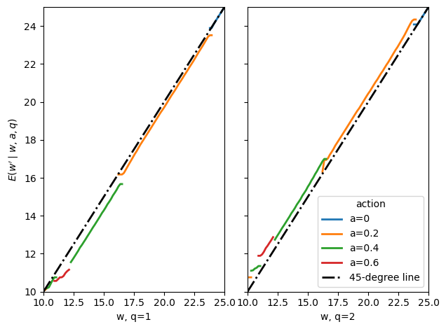
Fig. 60.9 expected continuation promises#
This plot displays the expected next-period promise conditional on current \(w\), recommended action \(a\), and realized output \(q\).
High output generally raises continuation utility and low output lowers it.
At the endpoints of the feasible promise set, the transition stays on the 45-degree line because only the corresponding extreme plan can deliver that endpoint.
For the simulations, we use a higher discount factor, \(\beta = 0.95\).
The higher discount factor makes promised utility a stronger incentive instrument and makes the evolution of individual histories easier to see.
We solve the infinite-horizon economy again at \(\beta = 0.95\) with a grid of \(N = N_m = 50\) points.
Starting from the static solution rescaled to discounted-sum units, the iteration converges to tolerance \(10^{-4}\).
β_95 = 0.95
N_95 = 50
N_m95 = 50
w_l_95 = u(A.min(), C.min()) / (1 - β_95)
w_u_95 = u(A.min(), C.max()) / (1 - β_95)
W_95 = np.linspace(w_l_95, w_u_95, N_95)
s_W_0_95, _ = solve_static_problem(W_95 * (1 - β_95), u, A, Q, C, P,
"unobserved-actions")
with qe.Timer():
s_W_new, π_W_s1_new, π_W_m_s2_new, W_new = solve_multi_period_economy(
A, Q, C, P, "unobserved-actions",
β=β_95, N=N_95, N_m=N_m95,
s_W_0=s_W_0_95 / (1 - β_95),
tol=1e-4, max_iter=300, m_anderson=5,
verbose=True)
Iter 1: max|ΔsW| = 4.93e-01 (0.1s)
Iter 2: max|ΔsW| = 4.25e-01 (0.1s)
Iter 3: max|ΔsW| = 2.98e-01 (0.1s)
Iter 4: max|ΔsW| = 9.57e-02 (0.1s)
Iter 5: max|ΔsW| = 8.02e-02 (0.1s)
Iter 6: max|ΔsW| = 3.55e-02 (0.1s)
Iter 7: max|ΔsW| = 1.98e-02 (0.1s)
Iter 8: max|ΔsW| = 1.73e-02 (0.1s)
Iter 9: max|ΔsW| = 5.16e-03 (0.1s)
Iter 10: max|ΔsW| = 2.63e-03 (0.1s)
Iter 11: max|ΔsW| = 2.14e-03 (0.1s)
Iter 12: max|ΔsW| = 1.94e-03 (0.1s)
Iter 13: max|ΔsW| = 1.55e-03 (0.1s)
Iter 14: max|ΔsW| = 1.22e-03 (0.1s)
Iter 15: max|ΔsW| = 1.38e-03 (0.1s)
Iter 16: max|ΔsW| = 5.41e-04 (0.1s)
Iter 17: max|ΔsW| = 2.29e-04 (0.1s)
Iter 18: max|ΔsW| = 2.01e-04 (0.1s)
Iter 19: max|ΔsW| = 1.63e-04 (0.1s)
Iter 20: max|ΔsW| = 9.24e-05 (0.1s)
Converged in 20 iterations.
1.9073 seconds elapsed
π_new = np.einsum("waqm,mcx->waqcx", π_W_s1_new, π_W_m_s2_new)
For the simulation, a state is a current promise grid point.
Given that state, the code draws an action, then output, then a pair \((c,w')\) from the joint lottery.
The next period’s state is the realized \(w'\).
def draw_from(probabilities, rng):
probabilities = np.maximum(np.asarray(probabilities, dtype=float), 0.0)
total = probabilities.sum()
if total <= 1e-12:
return rng.integers(len(probabilities))
probabilities = probabilities / total
return min(np.searchsorted(np.cumsum(probabilities), rng.random()),
len(probabilities) - 1)
def simulation(W, C, s_W, T, π, seed=12345):
w_index = np.nanargmin(np.abs(s_W))
rng = np.random.default_rng(seed)
w_series = np.empty(T + 1)
c_series = np.empty(T)
w_series[0] = W[w_index]
for i in range(T):
joint = np.maximum(π[w_index], 0.0)
a_index = draw_from(joint.sum(axis=(1, 2, 3)), rng)
q_index = draw_from(joint[a_index].sum(axis=(1, 2)), rng)
cw_prob = joint[a_index, q_index]
cw_index = draw_from(cw_prob.ravel(), rng)
c_index, w_next_index = np.unravel_index(cw_index, cw_prob.shape)
c_series[i] = C[c_index]
w_index = w_next_index
w_series[i + 1] = W[w_index]
return c_series, w_series
c_series = np.zeros((80, 4))
w_series = np.zeros((81, 4))
for i in range(4):
c_series[:, i], w_series[:, i] = simulation(
W_new, C, s_W_new, 80, π_new, seed=(12345 + i))
The simulations start from the grid point at which surplus is closest to zero.
This corresponds to the ex ante symmetric, or “fair”, allocation.
It is the highest common promised utility that can be assigned while keeping discounted social surplus nonnegative.
The next figure plots four simulated consumption histories from the same initial promised utility.
date_c = np.arange(80) + 1
plt.figure()
plt.plot(date_c, c_series[:, 0], lw=2)
plt.plot(date_c, c_series[:, 1], lw=2)
plt.plot(date_c, c_series[:, 2], lw=2)
plt.plot(date_c, c_series[:, 3], lw=2)
plt.xlabel("date")
plt.ylabel("consumption")
plt.xlim([0, 80])
plt.ylim([0.00, 2.25])
plt.show()
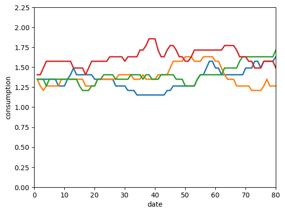
Fig. 60.10 simulated consumption histories#
The four consumption paths differ even though all agents begin with the same promised utility.
Different output histories move agents to different continuation promises, so the contract gradually creates heterogeneous consumption histories.
The next figure plots the corresponding promised-utility histories.
date_w = np.arange(81)
plt.figure()
plt.plot(date_w, w_series[:, 0], lw=2)
plt.plot(date_w, w_series[:, 1], lw=2)
plt.plot(date_w, w_series[:, 2], lw=2)
plt.plot(date_w, w_series[:, 3], lw=2)
plt.xlabel("date")
plt.ylabel("expected utility")
plt.ylim([40.0, 100.0])
plt.show()
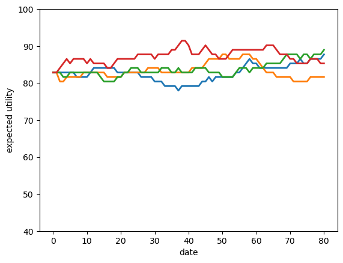
Fig. 60.11 simulated promised utilities#
The promised-utility paths show the state variable moving directly.
High-output histories tend to move the agent upward, while low-output histories move the agent downward.
This is the dynamic incentive mechanism in the model.
For distributional plots, it is cleaner to propagate population mass directly instead of drawing more individual histories.
def population_distributions(W, C, s_W, T, π):
w_index = np.nanargmin(np.abs(s_W))
μ = np.zeros(len(W))
μ[w_index] = 1.0
π_pos = np.maximum(π, 0.0)
row_sums = π_pos.sum(axis=(1, 2, 3, 4), keepdims=True)
π_pos = np.divide(π_pos, row_sums,
out=np.zeros_like(π_pos),
where=row_sums > 1e-12)
π_c = np.zeros((T, len(C)))
π_w = np.zeros((T, len(W)))
for t in range(T):
joint = np.tensordot(μ, π_pos, axes=(0, 0))
π_c[t] = joint.sum(axis=(0, 1, 3))
μ = joint.sum(axis=(0, 1, 2))
μ = μ / μ.sum()
π_w[t] = μ
return π_c, π_w
π_c, π_w = population_distributions(W_new, C, s_W_new, 80, π_new)
The distribution calculation above keeps the whole population rather than drawing individual sample paths.
Starting from a point mass over \(w\), it applies the optimal lottery each period and records the implied marginal distributions of consumption and promised utility.
The next wireframe plots the cross-sectional consumption distribution over time.
date_mat_c = np.reshape(np.arange(80) + 1, (80, 1)) * \
np.ones((1, len(C)))
c_mat = np.ones((80, 1)) @ np.reshape(C, (1, len(C)))
fig = plt.figure()
ax = fig.add_subplot(projection='3d')
plt.xlabel('date')
plt.ylabel('consumption')
ax.set_zlabel('percentage')
ax.set_zlim(0.0, 1.0)
ax.view_init(elev=25, azim=-65)
ax.plot_wireframe(date_mat_c, c_mat, π_c,
rstride=1, cstride=2,
color="black", linewidth=0.35)
plt.show()
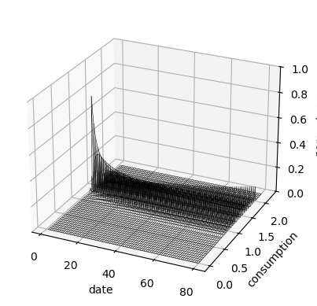
Fig. 60.12 consumption distribution over time#
The consumption distribution spreads out over time because histories receive different rewards and punishments.
On the finite grid, some mass eventually reaches the edges of the feasible promise set.
The final wireframe plots the distribution of promised utility itself.
date_mat_w = np.reshape(np.arange(80) + 1, (80, 1)) * \
np.ones((1, len(W_new)))
W_mat_12 = np.ones((80, 1)) @ np.reshape(W_new, (1, len(W_new)))
fig = plt.figure()
ax = fig.add_subplot(projection='3d')
plt.xlabel('date')
plt.ylabel('w')
ax.set_zlabel('percentage')
ax.set_zlim(0.0, 1.0)
ax.view_init(elev=25, azim=-65)
ax.plot_wireframe(date_mat_w, W_mat_12, π_w,
rstride=1, cstride=2,
color="black", linewidth=0.35)
plt.show()
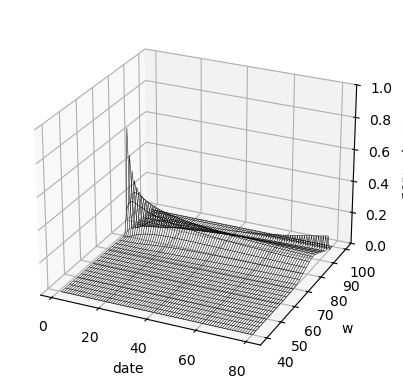
Fig. 60.13 promise distribution over time#
The promise distribution is the deeper state-space picture behind the consumption distribution.
It shows how repeated incentives convert a common initial promise into a distribution of continuation utilities.
60.6. Concluding remarks#
60.6.1. Economics#
60.6.1.1. Moral hazard and the cost of private information#
When the principal cannot observe the agent’s effort, the optimal contract must balance two competing objectives: insurance (smoothing the agent’s consumption across output realizations) and incentives (rewarding high output to make effort attractive).
The hidden-effort surplus frontier lies below the full-information frontier, and the gap between them measures the surplus cost of unobserved effort.
Restricting the contract to one period raises consumption variability and lowers average output relative to the multi-period optimum, the gain visible in Fig. 60.6.
60.6.1.2. Dynamic contracts and promised utility#
The recursive formulation of Spear and Srivastava [1987] compresses all payoff-relevant history into a single scalar state: the discounted expected continuation utility \(w\) that the principal has promised the agent.
By tracking \(w\) rather than the full history of outputs, the dynamic contracting problem becomes tractable.
In the optimal infinite-horizon contract, the principal rewards high output by granting the agent a higher continuation utility and punishes low output by lowering it.
Continuation promises therefore substitute partly for large contemporaneous consumption spreads.
60.6.1.3. Diversity over time#
The simulations illustrate the central computational message: starting from a common initial promise, dynamic incentives generate non-trivial individual histories and cross-sectional dispersion in consumption and promised utility.
On the finite grid used here, the lowest and highest promised-utility values act as traps: once an agent’s promise reaches either end, the only feasible contract keeps it there, so the agent never moves back.
The simulations should therefore be read as finite-grid illustrations of how history dependence spreads the distribution over time, not as a separate theorem about the limiting distribution.
60.6.2. Technical tricks#
60.6.2.1. Lotteries and convexification#
Incentive constraints can render the set of feasible contracts non-convex, making standard optimization techniques unreliable.
Phelan and Townsend [1991] circumvented this by allowing the planner to choose a joint lottery \(\Pi(a, q, c, w')\) over actions, outputs, consumptions, and continuation values.
Because any mixture of feasible lotteries is itself feasible, the constraint set becomes convex, and global optima are well-defined.
60.6.2.2. Linear programming#
With finite grids, the convexified Bellman equation is a linear program: the objective \((q - c + \beta v(w'))\) and every constraint are linear in \(\Pi\).
Treating \(v(w')\) as a fixed vector from the previous iteration, value function iteration reduces to solving one LP per grid point per iteration, a task handled efficiently by modern LP solvers such as HiGHS.
60.6.2.3. Dynamic programming squared#
This lecture is closely related to what Ljungqvist and Sargent [2018] call dynamic programming squared.
The phrase refers to recursive problems in which one continuation object is carried as a state variable inside another recursive problem.
Here the surplus function \(s(w)\), the solution to the principal’s outer dynamic program, has the agent’s continuation utility \(w\) as its state variable, while feasible movements in \(w\) are governed by promise-keeping and incentive constraints.
The same architecture reappears throughout this lecture series.
In Stackelberg plans the Stackelberg leader’s value function takes the followers’ competitive-equilibrium value function as an argument.
In Optimal Taxation with State-Contingent Debt, a Ramsey planner’s outer Bellman equation uses the household’s marginal utility of wealth \(x\), itself defined by an inner implementability constraint, as its state variable.
In the Calvo model and the two Chang lectures (Ramsey plans and credible policies), a government’s value function takes the private sector’s continuation value \(\theta\) as an argument, with \(\theta\) governed by its own Bellman equation.
In Unemployment Insurance the planner’s contract-design problem embeds the worker’s continuation utility as the state variable in an outer surplus-maximization program, producing a closely related nested recursive structure.
In all of these settings, the inner dynamic program defines a state variable (a promised utility, a marginal value, or a continuation value) that restricts what the outer dynamic program can promise or deliver.
The same recursive idea — carry promised utility as the state and restrict which promises the contract may offer — reappears in the International Lending with Moral Hazard and Risk of Repudiation lecture.
There a sovereign borrower can repudiate its debt and walk away to autarky at any time, so the contract must always promise at least the value of that outside option.
60.7. Exercises#
Exercise 60.1
Using the surplus arrays s_W_full and s_W_unobs computed in the
static section, define the agency cost function
Plot \(\delta(w)\) over \(W_{static} = [1, 5]\).
Report the value \(\hat{w}\) at which \(\delta\) is largest.
Explain intuitively why agency costs are highest at that level of promised utility.
Solution
δ_W = s_W_full - s_W_unobs
plt.figure()
plt.plot(W_static, δ_W, lw=2)
plt.xlabel("w")
plt.ylabel(r"$\delta(w) = s^{FI}(w) - s^{UA}(w)$")
plt.xlim([1.0, 5.0])
plt.ylim(bottom=0.0)
plt.title("agency cost function")
plt.show()
max_i = np.nanargmax(δ_W)
w_hat = W_static[max_i]
print(f"Largest agency cost at w = {w_hat:.3f}, δ = {δ_W[max_i]:.4f}")
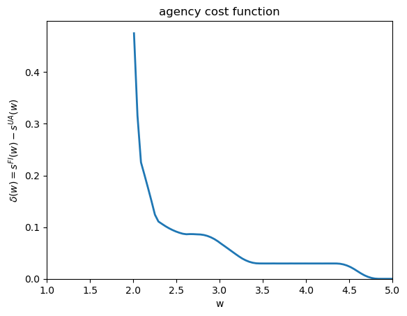
Largest agency cost at w = 2.010, δ = 0.4752
Agency costs are highest near intermediate levels of promised utility because at those values the principal most values inducing high effort (output is valuable) while the agent still requires meaningful consumption-state variation to be incentivized.
At low \(w\) the agent is near subsistence and effort is low anyway; at high \(w\) the agent is nearly fully insured and the marginal incentive cost of each additional unit of effort is small.
Exercise 60.2
The output probability matrix \(P\) governs how informative output is about effort. Define a flatter probability matrix
in which output is less informative about effort than in the baseline \(P\).
Re-solve the static unobserved-action problem with \(P_{flat}\) and the same grid \(W_{static}\).
On a single figure with two panels, compare the surplus functions \(s^{UA}(w)\) and expected effort levels \(E\{a(w)\}\) under \(P\) and \(P_{flat}\).
Explain the economic intuition for any differences you find.
Solution
P_flat = np.array([[0.70, 0.30],
[0.55, 0.45],
[0.45, 0.55],
[0.30, 0.70]])
s_W_flat, π_flat = solve_static_problem(W_static, u, A, Q, C, P_flat,
"unobserved-actions")
Ea_flat = np.einsum('a,waqc->w', A, π_flat)
fig, axes = plt.subplots(1, 2)
axes[0].plot(W_static, s_W_unobs, label="Baseline $P$", lw=2)
axes[0].plot(W_static, s_W_flat, label="Flat $P$", lw=2)
axes[0].hlines(0, 1.0, 5.0, linestyle="dashed")
axes[0].set_xlabel("w")
axes[0].set_ylabel("s(w)")
axes[0].set_xlim([1.0, 5.0])
axes[0].legend()
axes[1].plot(W_static, Ea_unobs, label="Baseline $P$", lw=2)
axes[1].plot(W_static, Ea_flat, label="Flat $P$", lw=2)
axes[1].set_xlabel("w")
axes[1].set_ylabel(r"$E\{a(w)\}$")
axes[1].set_xlim([1.0, 5.0])
axes[1].set_ylim([0.0, 0.8])
axes[1].legend()
fig.suptitle("surplus and effort under flatter probabilities")
plt.tight_layout()
plt.show()
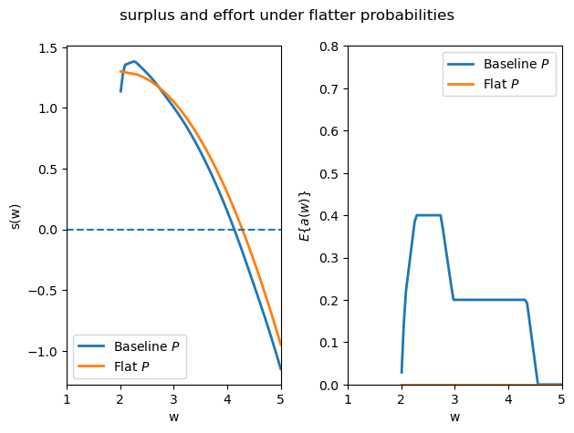
With \(P_{flat}\) output carries less statistical information about effort: the likelihood ratio \(P(q \mid \hat{a}) / P(q \mid a)\) is closer to 1 for all deviations \(\hat{a} \neq a\).
The incentive-compatibility constraint (60.7) therefore becomes harder to satisfy: large consumption rewards for high output must be offered to deter deviations, crowding out insurance.
As a result the principal extracts less surplus and induces less effort than under the baseline \(P\): the surplus function shifts down and expected effort falls.